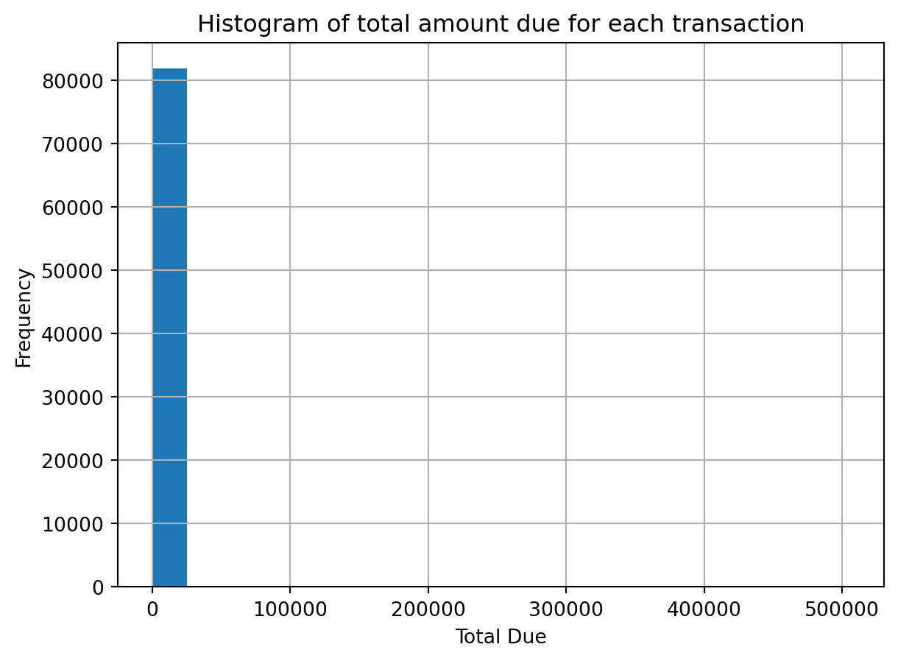
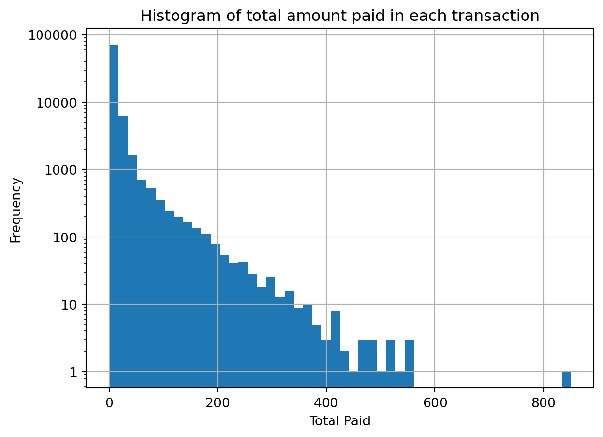
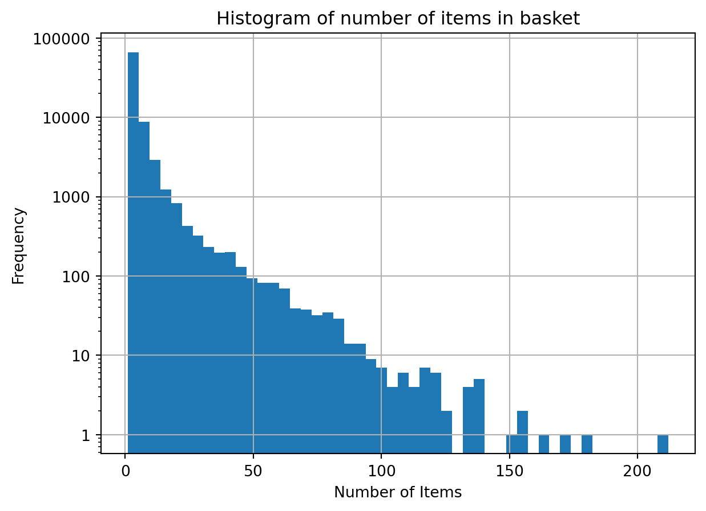
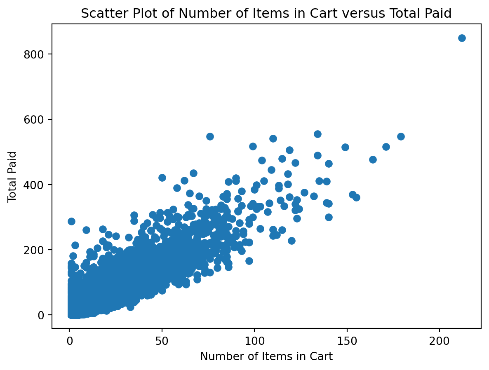
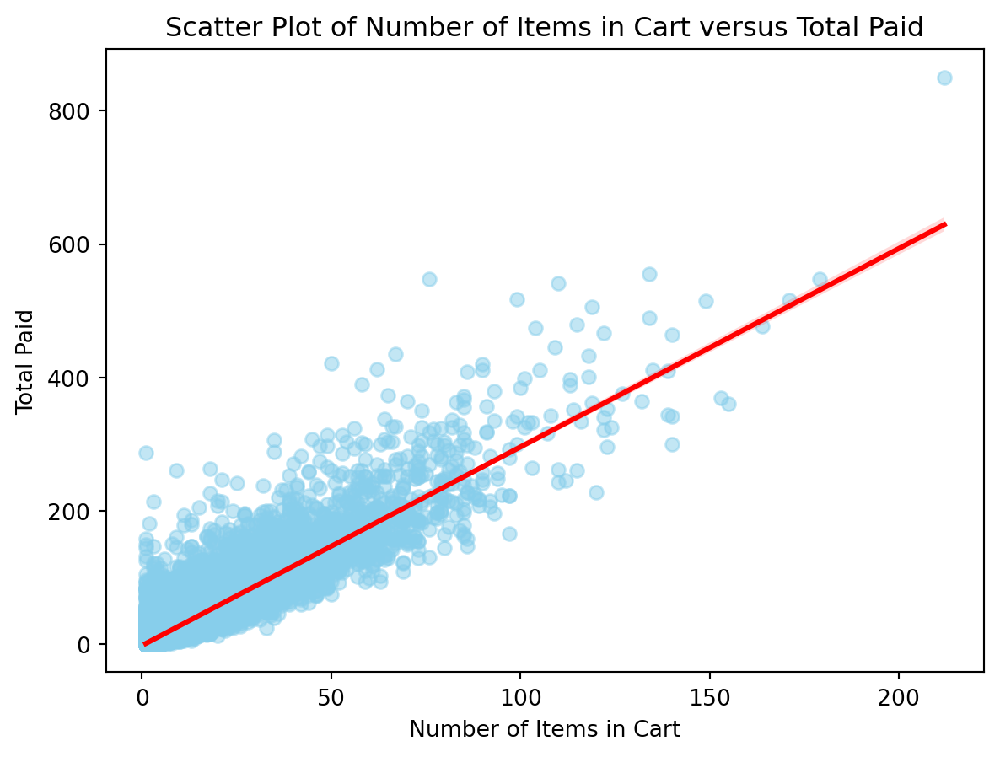
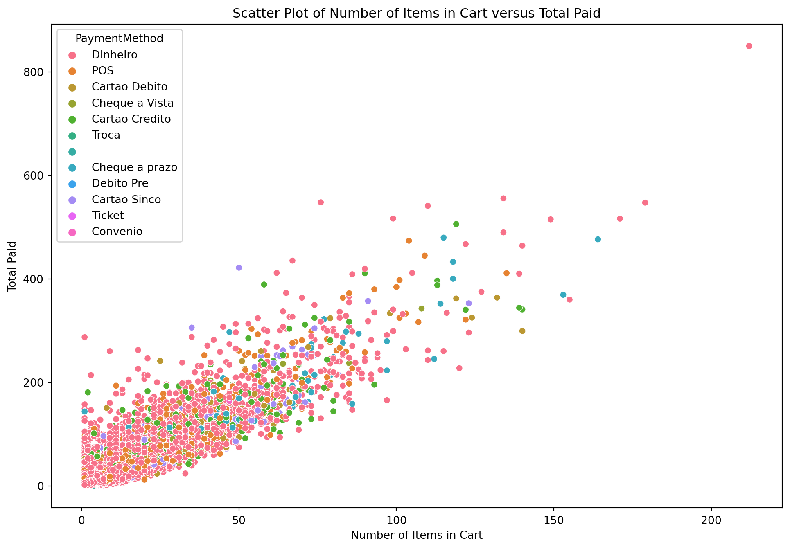
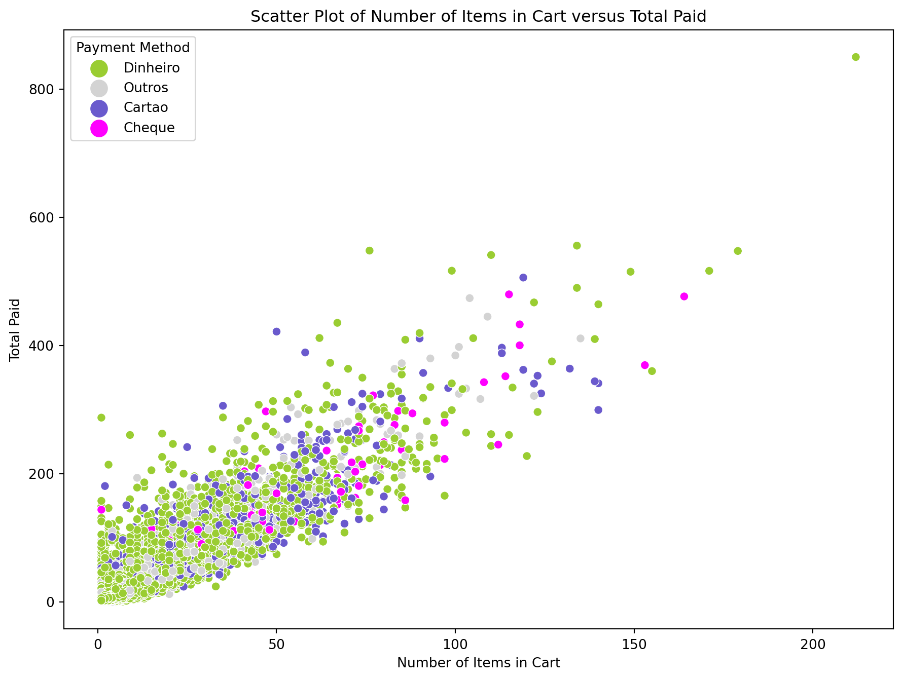
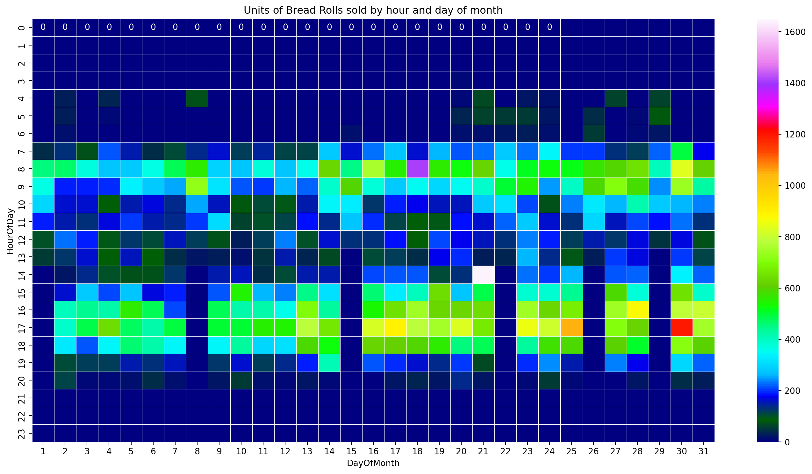

Supermarket Basket Analysis
This chapter presents a more or less complete example of a data science approach to analysis of a supermarket transaction database. The data was obtained from an anonymous Brazilian supermarket and preprocessed to make some examples easier to follow and modify.
The Data
The main dataset used in this project can be downloaded as a CSV-formatted file (57MB).
CSV (comma-separated values) files contains one record per line, with the fields of the recort separated by a special character, usually a comma. The first 10 lines of that file are shown below (lines are wide, please scroll horizontally to see all the fields):
FileID,StoreID,POSID,TransactionID,Date,itemOrder,Description,UnitPrice,Quantity,Amount,Unit,PaymentMethod,TotalDue,TotalPaid,Change,Status
050501/075954_01090841.xml,0003,0001,001026,20050501080242,001,"VELA FESTLAR FELIZ ANI", 0.78, 1.00, 0.78,Un,"Dinheiro ", 4.00, 2.91, 1.09,T
050501/075954_01090841.xml,0003,0001,001026,20050501080242,002,"VELA FESTLAR FELIZ ANI", 0.78, 1.00, 0.78,Un,"Dinheiro ", 4.00, 2.91, 1.09,T
050501/075954_01090841.xml,0003,0001,001026,20050501080242,003,"ESCOVA D. TEK DURA ", 1.35, 1.00, 1.35,Un,"Dinheiro ", 4.00, 2.91, 1.09,T
050501/075956_01090842.xml,0003,0001,001027,20050501080351,001,"SUSTAGEN 380G KIDS CHO", 7.89, 1.00, 7.89,Un,"Dinheiro ", 10.00, 8.91, 1.09,T
050501/075956_01090842.xml,0003,0001,001027,20050501080351,002,"PAO FRANCES ", 0.17, 6.00, 1.02,Un,"Dinheiro ", 10.00, 8.91, 1.09,T
050501/080011_01090843.xml,0003,0001,001028,20050501080420,001,"PAO FRANCES ", 0.17, 6.00, 1.02,Un,"Dinheiro ", 3.06, 3.06, 0.00,T
050501/080011_01090843.xml,0003,0001,001028,20050501080420,002,"LEITE PAST. SERRAMAR S", 1.15, 1.00, 1.15,Un,"Dinheiro ", 3.06, 3.06, 0.00,T
050501/080011_01090843.xml,0003,0001,001028,20050501080420,003,"FARINHA TRIGO LILI KG ", 0.89, 1.00, 0.89,Un,"Dinheiro ", 3.06, 3.06, 0.00,T
050501/080011_02003462.xml,0003,0002,000953,20050501074105,001,"OLEO P/ MOTOR HAVOLINE", 6.22, 1.00, 6.22,Un,"Dinheiro ", 10.00, 6.22, 3.78,TThe file contains 363966 records of itens bought in one of the supermarkets’ stores, each item in a line, so a set of lines may correspond to a single transaction (or a basket of items). Each line contains several fields, separated by commas.
What are the advantages of representing the transactions one per line? What are the disadvantages?
The fields (or columns) on this file are:
FileID: name of the file containing the original transaction.StoreID: number of the store or branch of the supermarket.POSID: number of the point of sale in that store.TransactionID: id of the transaction. Every item in the transaction (shopping cart) share the same TransactionID.Date: date of the transaction (year, month, day, hour, minute, second) as a long number.itemOrder: ordem of tht item in the transaction.Description: short textual description of that item.UnitPrice: unit price for that item.Quantity: total number of items. May be measured in units, kg or other (see field Unit below).Amount: total paid for those items.Unit: whether the item is bought by unit, weight etc.PaymentMethod: method used for payment.TotalDue: sum of prices for all items in that cart (transaction).TotalPaid: total paid for all items in that cart (transaction). May be more thanTotalDue(e.g. for payments in cash).Change: amount of change, if any.Status: ‘F’ for completed transaction, ‘T’ if the transaction was cancelled.
We can see that the first line of the file contains the names of the columns, that makes it easier to read/import into data frames, which we can consider as a spreadsheet-formatted data: each line is a record of an occurrence or record (in this of an item being bought at the supermarket), and there are fields for each record (the columns of the file).
Some of the values of the fields are clearly numbers (e.g. TotalPaid, UnitPrice), some are textual descriptions (e.g. Description). This difference between data formats is very important for some analysis and visualization techniques.
Some additional data is provided for each item, in this case, related to the transaction that that item belongs to. It is possible to merge itens into transactions, to perform market basket and other analysis.
There are several interesting questions we can try to answer with this kind of data, and more that will surely arise from the initial exploration.
Reading and Preprocessing
Let’s read the file with the supermarket transactions data and do some preprocessing tasks. For this task we will use Python (Rossum and Jr. 2001), Pandas (McKinney 2012) and Matplotlib (Hunter 2007) and Seaborn (Waskom 2021) for visualization. First we import the libraries we need:
import pandas as pd # to represent and process dataframes
import matplotlib.pyplot as plt # to create some plots and charts
import seaborn as sns # a different graphics library.The type of structure we are dealing with looks like a table or spreadsheet, represented in a file with each row containing fields separated by commas, and it is better represented as a dataframe. Reading a comma-separated value into a dataframe in Python is very easy: we can use a function of the Pandas library to get the file into a data frame, as shown below:
# Read the data from a file into a dataframe, with proper character encoding
supermDF = pd.read_csv("Resources/Data/SupermarketCSV/transactions.csv",
encoding="iso-8859-1")The encoding of a text file corresponds to the way characters are stored in a text file. Some tools can identify the encoding automatically, but in some cases the programmer needs to provide it.
How many records and fields did we just read? The shape of the dataframe can be used to answer this, showing the number of rows and columns.
supermDF.shape(363966, 16)We may need to do some preprocessing for simplicity and convenience. For example, the field Date was read as we will convert the field to a real date/time field.
# Convert the field Date to a string, which is used by pd.to_datetime with a specific
# format to be converted into an array of datetime object, which is stored in our
# dataframe using a new column name.
supermDF['DateTime'] = pd.to_datetime(supermDF['Date'].astype(str),format='%Y%m%d%H%M%S')Basic EDA
Now we can do some basic exploratory data analysis. There isn’t a single recipe for that – what we should do is think about questions about the data and try to answer those with code/plots/analysis. These questions may be inspired by knowledge of the nature of what created the data, assumptions on its features or simply curiosity.
How many different products does the supermarket sells?
In order to answer this question we would need access to different data: a complete catalogue of the products the supermarket sells. But we can get the answer to how many different products the supermarket sold by looking at the Description field and counting unique values. Here’s how:
# Get the column Description, create a series with the unique values on it,
# return the length of this series.
len(pd.unique(supermDF['Description']))4791This one line of code slices the dataframe, selecting only the column/field Description and passes it as an argument to a the function unique of the Pandas library that eliminates all repeated items and returns a list, which then is used as an argument to len that counts the elements on that list.
Another way to get the number of different products sold by the supermarket is to get a count of occurrences of each item, which can be easily done with a call to value_counts function of a slice of a dataframe:
# Show a summary of the counts for all values of the column Description.
supermDF['Description'].value_counts()Description
PAO FRANCES 19648
ACUCAR REFINADO A. ALE 5067
OLEO SOJA SOYA 900ML P 4800
QUEIJO MUSSARELA 4694
FLV CEBOLA 4342
...
CERA POLIFLOR LIQ. INC 1
ALCACHOFRA C\10 1
ESP. HIKARI PAPRICA DO 1
DOCE KISABOR P.PE MOLE 1
BRINQ. FESTLAR 10UN AN 1
Name: count, Length: 4791, dtype: int64We can check which are the top ten sellers (by quantity) with:
# Show the top ten items of the counts for all values of the column Description.
supermDF['Description'].value_counts().head(10)Description
PAO FRANCES 19648
ACUCAR REFINADO A. ALE 5067
OLEO SOJA SOYA 900ML P 4800
QUEIJO MUSSARELA 4694
FLV CEBOLA 4342
FLV TOMATE CARMEM 4178
BEB. REF.COCA COLA 2L 3303
FLV BANANA PRATA 3252
FLV ALHO 3196
FLV LARANJA POCAN 3162
Name: count, dtype: int64And even filter by quantity using a range:
# Store the counts in a series.
counts = supermDF['Description'].value_counts()
# Filter those between two values.
counts[counts.between(1000,1200)]Description
AGUA SANIT. FAZ.ESPERA 1190
LEITE COND. MOCA 395G 1153
LEITE PAST. SERRAMAR S 1149
GELATINA DABARRA 85 GR 1139
FLV BATATA BOLINHA 1138
BACON REZENDE KG 1138
BOV.PALETA 1137
REFRESCO DA BARRA 35G 1127
FLV BATATA LAVADA 1122
MARGARINA QUALY 500G C 1113
BOV. CONTRA FILE 1100
BOV.MUSCULO 1075
FLV PIMENTAO VERDE 1048
SAL ITA 1KG 1042
MORTADELA MARBA 1039
FLV TAKAGAKI ALFACE LI 1014
LEITE COND. ITAMBE 395 1010
Name: count, dtype: int64How many different payment methods are there in our data? Which is the most popular?
How many transactions failed? How many succeeded?
What’s the average basket value?
In order to get this information we would need to scan all itens, adding the values for each transaction and calculate the average of these values. But the way that we chose to store the itens makes the first step easier: since all item entries on the dataframe contains information on the transaction it belongs to, we can get all itens where the field itemOrder is one (the first item on that transaction) and use the field TotalDue to get the transaction’s value.
First we create a subset of our dataframe containing only the first item on the transaction:
# Create a new dataframe with only the first item in each transaction.
onlyFirstItems = supermDF.loc[supermDF['itemOrder'] == 1].copy()Now we can get the average transaction value with:
# Prints the mean of all transactions' TotalDue.
onlyFirstItems['TotalDue'].mean()36.371526707300696We can even have some fun with subsets of the dataframe:
# Get the mean of all transactions' TotalDue.
ts1 = onlyFirstItems.loc[onlyFirstItems['StoreID'] == 1,'TotalDue'].mean()
ts2 = onlyFirstItems.loc[onlyFirstItems['StoreID'] == 2,'TotalDue'].mean()
ts3 = onlyFirstItems.loc[onlyFirstItems['StoreID'] == 3,'TotalDue'].mean()
ts4 = onlyFirstItems.loc[onlyFirstItems['StoreID'] == 4,'TotalDue'].mean()
# Format and print these values.
print(f"Mean Total Due by Store: 1:{ts1:.2f}, 2:{ts2:.2f}, 3:{ts3:.2f}, 4:{ts4:.2f}.")Mean Total Due by Store: 1:36.91, 2:20.69, 3:50.56, 4:nan.As expected there isn’t an average value for sales in the store number 4, since it does not exist:
# Print a series with all unique values for StoreID.
pd.unique(supermDF['StoreID'])array([3, 2, 1])The code onlyFirstItems.loc[onlyFirstItems['StoreID'] == '0002'] returns an empty dataframe. Verify and explain the reason.
We can also plot a simple histogram showing the distribution of the total values for the baskets/transactions. The key command is plt.hist that creates a histogram using the values of the TotalDue field:
# Plot the histogram of TotalDue with 20 bins.
plt.hist(onlyFirstItems['TotalDue'], bins=20);
# Set some plot parameters.
plt.xlabel('Total Due')
plt.ylabel('Frequency')
plt.title('Histogram of total amount due for each transaction')
plt.grid(True)
# Display it.
plt.show()
This can’t be right – almost all transactions’ values are clumped together below 25.000 reais and the X axis indicates the existence of a transaction of around half a million reais. This is not consistent with what is expected of sales of a small supermarket.
Let’s print the top ten transactions by value:
# Create a list of columns we want to show.
fields = ['TransactionID','TotalDue','TotalPaid','Change','Status']
# Print the top 10 largest TotalDue values with the fields we chose.
onlyFirstItems.nlargest(10,'TotalDue')[fields]| TransactionID | TotalDue | TotalPaid | Change | Status | |
|---|---|---|---|---|---|
| 92896 | 121443_04084497 | 505050.0 | 5.78 | 505044.22 | T |
| 267595 | 200441_04090425 | 101100.0 | 1.74 | 101098.26 | T |
| 159154 | 182523_04052926 | 101050.0 | 6.46 | 101043.54 | T |
| 141321 | 164130_04052857 | 101010.1 | 2.05 | 101008.05 | T |
| 24458 | 191520_03008081 | 100100.0 | 96.46 | 100003.54 | T |
| 69744 | 173627_02005291 | 100100.0 | 82.81 | 100017.19 | T |
| 107012 | 100425_03010508 | 100100.0 | 79.60 | 100020.40 | T |
| 250981 | 114813_02028185 | 31060.0 | 7.56 | 31052.44 | T |
| 40004 | 090409_04082972 | 21010.0 | 1.90 | 21008.10 | T |
| 171630 | 105814_04053199 | 19000.0 | 182.69 | 18817.31 | T |
We can see that there are several transactions with large total paid values and changes – we don’t have an explanation for that, but it is clear that we need to consider the TotalPaid field for our analysis. This is a lesson into not jumping on the analysis before better understanding the data, and on how basic EDA can show us some issues with the data.
List basic information on all transactions above R$ 1.000,00.
Create a metric (boolean or numeric) that could be used to indicate a suspicious transaction (with large amounts for TotalDue and Change, for example.)
Is there a temporal pattern on those transactions? Do they occur more in some days or hours of day?
Are these transactions specific to one store or occur in all stores of the supermarket?
Are all those transactions paid for with cash?
Let’s recreate the histogram using TotalPaid but with more bins and a log Y axis this time:
import matplotlib.ticker as ticker # Required to format the Y axis.
# Plot the histogram of TotalDue with 50 bins.
plt.hist(onlyFirstItems['TotalPaid'], bins=50);
# Set some plot parameters.
plt.xlabel('Total Paid')
plt.ylabel('Frequency')
plt.yscale('log')
plt.title('Histogram of total amount paid in each transaction')
plt.grid(True)
# Correct the Y axis so values won't be displayed in scientific notation.
# This solution was suggested by ChatGPT!
ax = plt.gca()
ax.yaxis.set_major_formatter(ticker.FuncFormatter(lambda x, _: '{:g}'.format(x)))
# Display it.
plt.show()
This is better, although we can see that there is still one transaction with value above 800 reais. Let’s take a closer look at this transaction.
# Select only some fields for displaying.
fields = ['TransactionID','Description','UnitPrice','Quantity','Amount']
# Filter the dataframe locating only rows where TotalPaid is >= 800, then sort the
# filtered dataframe by Amount (from larger to smaller) then show the fields we chose.
supermDF.loc[supermDF['TotalPaid'] >= 800].sort_values('Amount',ascending=False)[fields]| TransactionID | Description | UnitPrice | Quantity | Amount | |
|---|---|---|---|---|---|
| 118981 | 132950_03062294 | LEITE LV MILENIO 1L | 1.39 | 24.00 | 33.36 |
| 118995 | 132950_03062294 | BOTIJAO GAZ 13kg | 27.90 | 1.00 | 27.90 |
| 118993 | 132950_03062294 | BOTIJAO GAZ 13kg | 27.90 | 1.00 | 27.90 |
| 119045 | 132950_03062294 | CAFE PILAO 500G | 4.98 | 4.00 | 19.92 |
| 119090 | 132950_03062294 | BEB. CERV.SKOL LT 473M | 1.65 | 12.00 | 19.80 |
| ... | ... | ... | ... | ... | ... |
| 118947 | 132950_03062294 | ERVILHA QUERO 200G | 0.69 | 1.00 | 0.69 |
| 119008 | 132950_03062294 | ERVILHA QUERO 200G | 0.69 | 1.00 | 0.69 |
| 118939 | 132950_03062294 | FLV CENOURA | 1.19 | 0.53 | 0.63 |
| 119025 | 132950_03062294 | FLV PIMENTAO VERDE | 1.89 | 0.27 | 0.51 |
| 118934 | 132950_03062294 | FLV LIMAO TAITI | 0.45 | 0.82 | 0.37 |
212 rows × 5 columns
It seems a large purchase, 212 itens in a transaction, but can still be considered normal.
We chose supermDF['TotalPaid'] >= 800 as a filter, knowing from the histogram that there is only one transaction that costed more than 800 reais. But what if there was more than one transaction? How do I identify the transaction IDs of purchases above a certain value, and display them separately?
Are there patterns on the amounts paid by the costumers?
How many items our costumers buy in each transaction? Are there patterns or distributions on this amount? Let’s explore!
First let’s see a histogram of the distribution of the number of items per transaction. In the way our data is organized, we need to infer this number since it is not explicit. To count the number of items per transaction we can group the dataframe by TransactionID and get the number of records in each group:
# Group records by TransactionID, select TransactionID to extract a metric (size).
itemsIT = supermDF.groupby('TransactionID')['TransactionID'].transform('size')
# Add it as a new column.
supermDF['itemsInTransaction'] = itemsIT
# We want only one record per transaction!
onlyFirstItems = supermDF.loc[supermDF['itemOrder'] == 1].copy()Then we can do a histogram to show the distribution of items per transaction:
# Plot the histogram of TotalDue with 50 bins.
plt.hist(onlyFirstItems['itemsInTransaction'], bins=50);
# Set some plot parameters.
plt.xlabel('Number of Items')
plt.ylabel('Frequency')
plt.yscale('log')
plt.title('Histogram of number of items in basket')
plt.grid(True)
# Correct the Y axis so values won't be displayed in scientific notation.
# This solution was suggested by ChatGPT!
ax = plt.gca()
ax.yaxis.set_major_formatter(ticker.FuncFormatter(lambda x, _: '{:g}'.format(x)))
# Display it.
plt.show()
As expected, most of the transactions contain a few items.
To count the number of items per transaction we could also get the maximum value for each itemOrder with the dataframe grouped by TransactionID. Try it!
We expect a sort of correlation between the number of items in a transaction and its total cost (TotalPaid). Let’s do a quick XY (or scatter) plot to verify this:
# Create the scatter plot with X=itemsInTransaction abnd Y=TotalPaid
plt.scatter(onlyFirstItems['itemsInTransaction'],onlyFirstItems['TotalPaid'])
# Set title and axes labels.
plt.title('Scatter Plot of Number of Items in Cart versus Total Paid')
plt.xlabel('Number of Items in Cart')
plt.ylabel('Total Paid')
# Show the plot.
plt.show()
Let’s enhance the plot with a linear regression line and confidence interval. The seaborn (Waskom 2021) library has a simple method for that:
# Create the X and Y series (to make next commands shorter).
X = onlyFirstItems["itemsInTransaction"]
Y = onlyFirstItems["TotalPaid"]
# Plot a regression plot with transparency in the data points.
sns.regplot(x=X,y=Y,scatter_kws={"color":"skyblue","alpha":0.5},line_kws={"color":"red"})
# Set title and axes labels.
plt.title('Scatter Plot of Number of Items in Cart versus Total Paid')
plt.xlabel('Number of Items in Cart')
plt.ylabel('Total Paid')
# Show the plot.
plt.show()
There are some outliers but the total paid for each transaction seems correlated with the number of items in each cart.
The regression line may be heavily influenced by the transactions with only a few items or with a low paymend due. Redo the plot but using only transactions with total above a cutoff, or with transactions with more than a specific number of items, or both.
Are those transactions paid by cash? Can we see any pattern or outlier on the payment method? Seaborn can use a discrete column as a color to help discriminate the points, let’s color the plot points using the payment method:
# Create the X, Y and points' color series (to make next commands shorter).
X = onlyFirstItems["itemsInTransaction"]
Y = onlyFirstItems["TotalPaid"]
PM = onlyFirstItems["PaymentMethod"]
# Plot a regression plot with transparency in the data points.
sns.scatterplot(x=X,y=Y,hue=PM)
# Set title and axes labels
plt.title('Scatter Plot of Number of Items in Cart versus Total Paid')
plt.xlabel('Number of Items in Cart')
plt.ylabel('Total Paid')
# Show the plot.
plt.show()
There is a payment category without a title. See how many transactions are in this situation and propose a way to deal with this data.
That wasn’t very useful, since there are many options of payments and we would like to aggregate them. Let’s create a new column on our dataframe to represent a simplified payment method.
# A simple function that simply the categories of payment method.
def simplifyPayment(paymethod):
if paymethod.startswith("Dinheiro"):
return "Dinheiro"
elif paymethod.startswith("Cartao"):
return "Cartao"
elif paymethod.startswith("Cheque"):
return "Cheque"
else:
return "Outros"
# Now we can add a new column based on the value of PaymentMethod.
onlyFirstItems['SimplifiedPaymentMethod'] = \
onlyFirstItems['PaymentMethod'].apply(simplifyPayment) With this new column we can plot a more informative scatter plot:
# We need a palette - a mapping from names to colors.
color_mapping = {
'Dinheiro': 'yellowgreen',
'Cartao' : 'slateblue',
'Cheque' : 'magenta',
'Outros' : 'lightgrey'
}
# Create the X, Y and points' color series (to make next commands shorter).
X = onlyFirstItems["itemsInTransaction"]
Y = onlyFirstItems["TotalPaid"]
col = onlyFirstItems["SimplifiedPaymentMethod"]
# Plot a scatter plot with the data points and the new palette.
sns.scatterplot(x='itemsInTransaction', y='TotalPaid', \
hue='SimplifiedPaymentMethod',\
s=40,data=onlyFirstItems,palette=color_mapping)
# Set title and axes labels
plt.title('Scatter Plot of Number of Items in Cart versus Total Paid')
plt.xlabel('Number of Items in Cart')
plt.ylabel('Total Paid')
# Change the title of the legend and the marker scale.
ax = plt.gca()
ax.legend(title='Payment Method',markerscale=2)
# Show the plot.
plt.show()
Some transactions’ values were about 500 reais and paid by cash – should we take a closer look?
Create plots to explore the relationship between itemsInTransaction and TotalPaid but using other fields to set the color – e.g. are the payment patterns the same for each of the three stores?
Are the payment patterns the same for different hours of the day? For different days on the week?
Are there temporal patterns on the sales data?
We can use EDA to investigate several different aspects of the data. Let’s consider the sale of a particular item, the most sold, "PAO FRANCES ". Is there a temporal pattern on its sale? We can answer that with a two-dimensional histogram that shows the amount of units sold by day and time.
First let’s create a subset of the data containing only the item in question. From this subset let’s also keep only the relevant fields. Let’s also create columns for day of the month and time of the day:
# Get only items that are equal to "PAO FRANCES "
onlyBreadRolls = supermDF.loc[supermDF['Description'] == "PAO FRANCES "]
# Select only some of the columns.
onlyBreadRolls = onlyBreadRolls[['StoreID','DateTime','Quantity']]
# Extract the day of month from the DateTime column, store in new column.
onlyBreadRolls['DayOfMonth'] = onlyBreadRolls['DateTime'].dt.day
# Extract the hour of day from the DateTime column, store in new column.
onlyBreadRolls['HourOfDay'] = onlyBreadRolls['DateTime'].dt.hourWith this dataframe we can create the two-dimensional histogram, which is done by counting all values for each combination of the fields DayOfMonth and HourOfDay (see Sum column based on another column in Pandas DataFrame).
# Sum the amounts for each combination of DayOfMonth and HourOfDay.
histoFB = onlyBreadRolls.groupby(["DayOfMonth","HourOfDay"]).Quantity.sum().reset_index() This two-dimensional histogram contains an entry for the sum of the field Quantity each combination of the fields DayOfMonth and HourOfDay, but if there weren’t specific combinations of DayOfMonth and HourOfDay the entry will not be created – the result of grouby does not return a matrix or dataframe with all possible combinations, only with the existing ones.
Print the contents of histoFB to understand better what was created.
The results can be used to create a heat map (a good visual representation for a two-dimensional histogram) but empty cells will not be displayed. To create a better visualization we can pad the two-dimensional so all possible combinations of DayOfMonth and HourOfDay with the non-occurring combinations filled with zeros (See Creating a rectangular Heatmap from two columns of a Pandas dataframe, Pandas: How to Replace NaN Values in Pivot Table with Zeros, pandas.DataFrame.reindex).
# Reorders the two-dimensional histogram as a matrix-like dataframe.
hmap = histoFB.pivot(index="HourOfDay", columns="DayOfMonth", values="Quantity")
# Use those indexes for the row and column indexes.
days = list(range(1, 32))
hours = list(range(24))
# Apply those indexes to the datafrme, filling nonexistent (na) values with zeros.
hmap = hmap.reindex(index=hours).reindex(columns=days).fillna(0)Now that we have our well-formed two-dimensional dataframe we can plot it as a heat map.
# Set the size, title and labels of the plot.
plt.figure(figsize=(18, 9))
plt.title('Units of Bread Rolls sold by hour and day of month')
plt.xlabel('Day of Month')
plt.ylabel('Hour of Day')
# Create and show the heatmap. Note the parameters used to make it look good.
sns.heatmap(hmap,cmap='gist_ncar',linewidths=0.30,annot=True,fmt='g',vmin=0,vmax=1650)
plt.show()
Visualization is a very important component of EDA. The heat map summarized the sales of bread rolls over time, pointing to several interesting features. List some of those, with possible explanations. Consider that a feature could be the beginning of another exploration path to learn more about the data! Some of these possible paths will be used in the exercises below.
We used the color map ‘gist_ncar’ which gives good-looking results but have some issues (colors for values around 500 and 700 are somehow similar). Try different color maps to see if others enhance some aspects of the data (see Matplotlib’s Colormap reference or Creating Colormaps in Matplotlib).
The heat map shows the number of bread rolls sold by the whole supermarket (all stores). Recreate the heat maps for the different stores, one heat map per store. Do they appear to behave in a similar way?
Create new versions of the heat map separating bread rolls that were paid by cash, credit card and other payment methods. See first which payment methods are more common.
We noticed that there were some days and hours where a lot of bread rolls were sold. Do a quick analysis on how many buyers bought bread rolls at that time and day, and how many bread rolls each costumer bought.
Do similar heat maps for three or four other items that are frequently sold. Choose any item that grabbed your attention! Analyze the heat maps to see if there are any patterns or oddities.